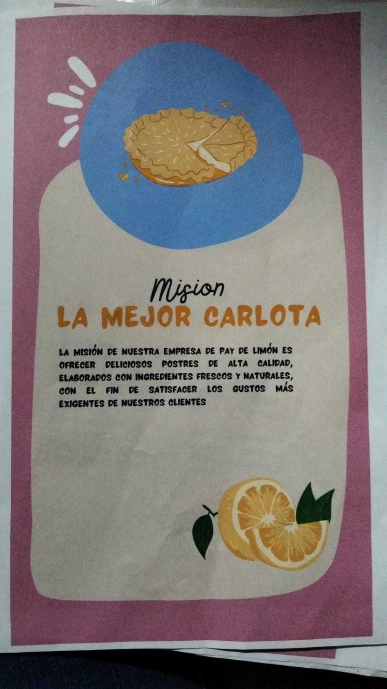
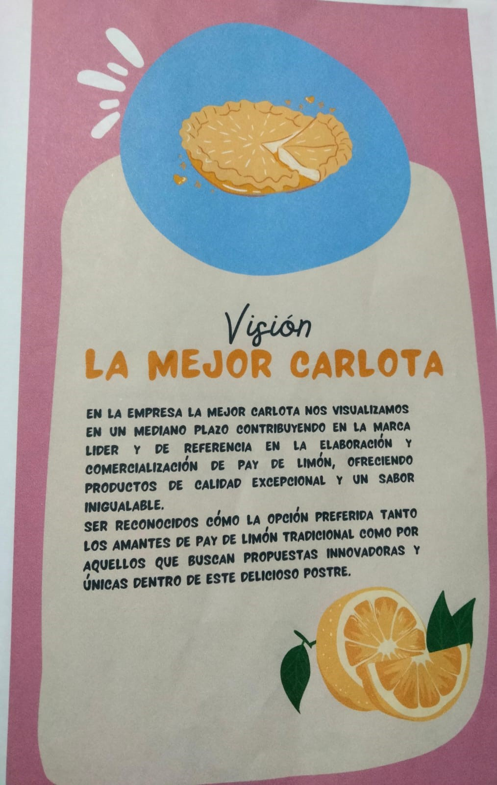
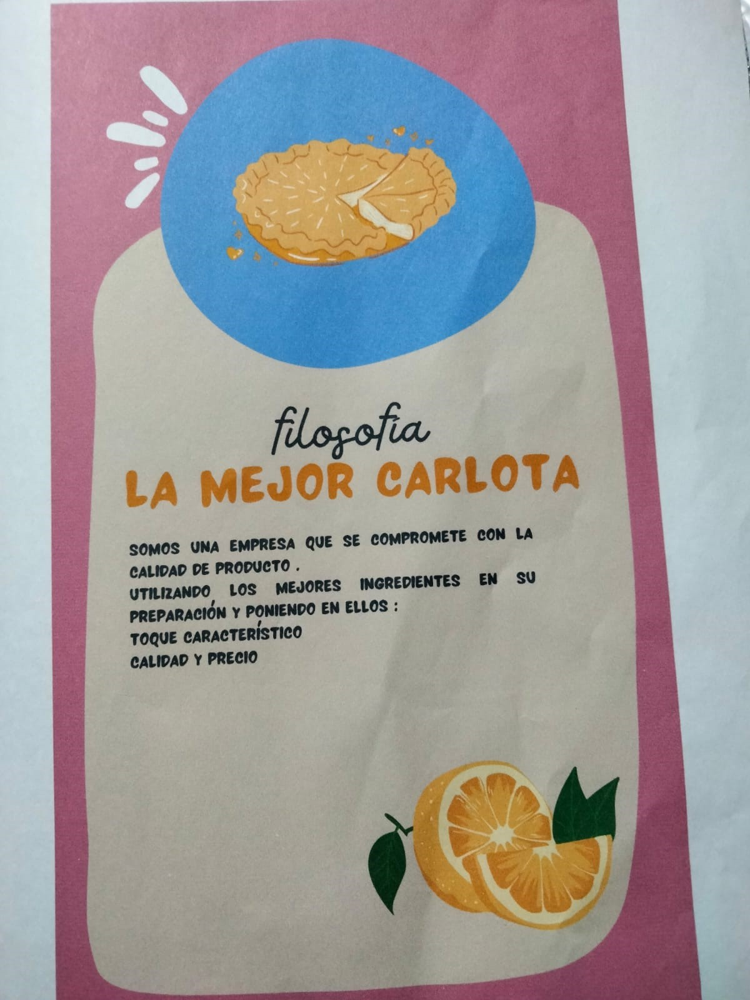
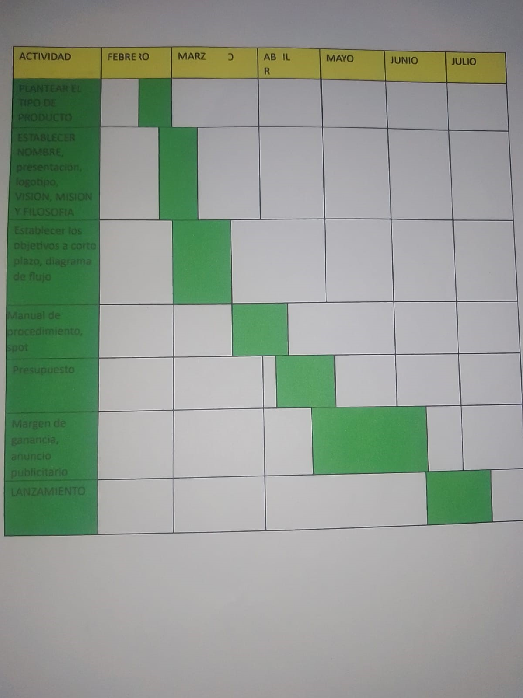
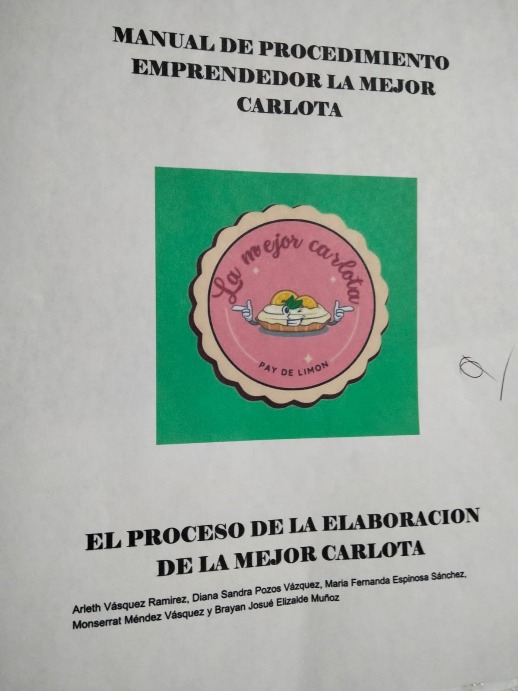
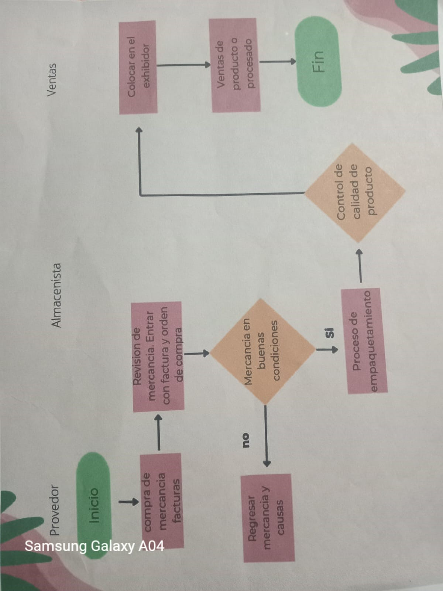
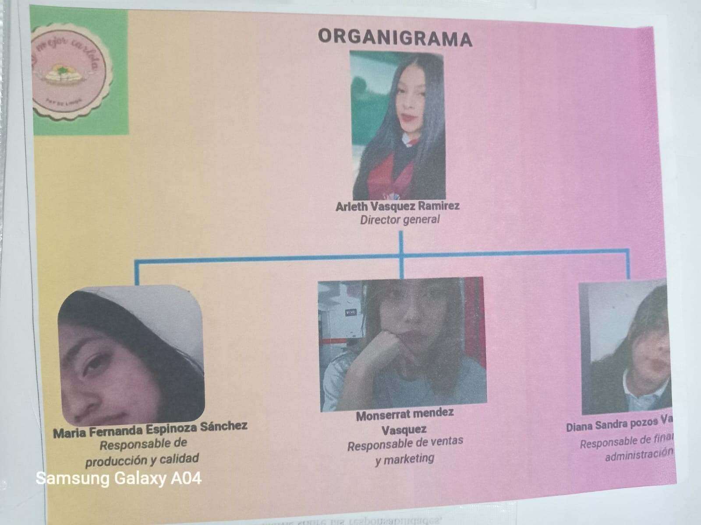
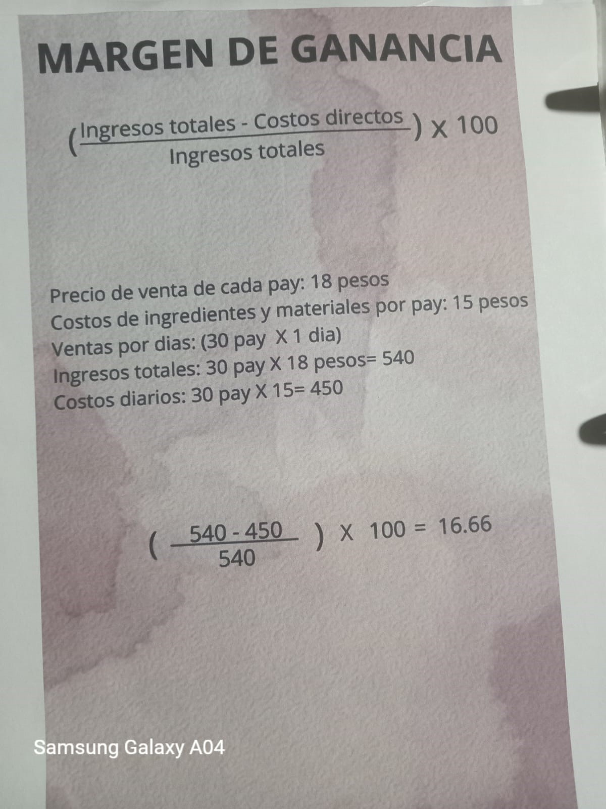
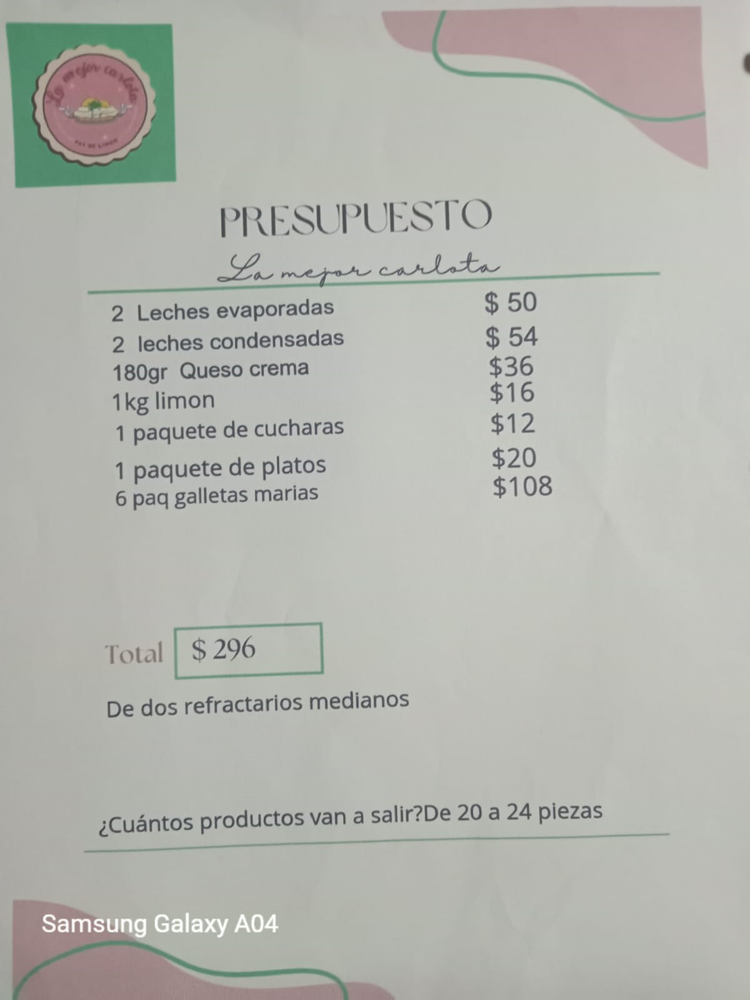

Bienvenidos a nuestra empresa. Nos comprometemos a vender pay de limon de la mejor calidad y con costo asecible, con la mejor atencion al cliente.
Nuestra misión como empresa es ofrecer deliciosos potres de alta calidad, elaborados con los mejores ingredientes.
Nos visualizamos en un mediano plazo ser reconocidos como la opcion perfecta en cada uno de nuestros clientes.
Nuestra filosofía se basa en los principios de compromiso con la calidad del producto,calidad y precio.
El diagrama de Gantt muestra la programación de cada uno de los pasos y actividades a lo largo del tiempo. A continuación, presentamos el diagrama de Gantt para nuestro proyecto.
Nuestros objetivos a corto plazo incluyen:
El manual de la empresa proporciona directrices y procedimientos para asegurar la consistencia y la calidad en todas nuestras operaciones. Puedes descargar el manual aquí.
El diagrama de flujo muestra los procesos internos de nuestra empresa. A continuación, presentamos el diagrama de flujo de nuestros procesos operativos.
El organigrama muestra la estructura organizativa de nuestra empresa, delineando los roles y responsabilidades de cada miembro del equipo.
El margen de ganancia es un indicador clave de nuestro desempeño financiero.
El presupuesto de nuestra empresa detalla los ingresos y gastos planificados. A continuación, presentamos un resumen del presupuesto.
